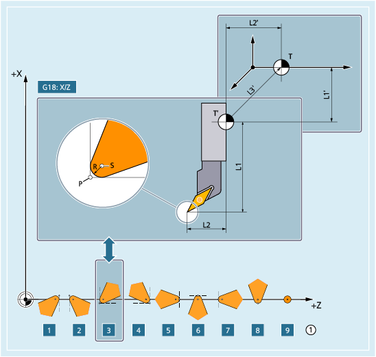
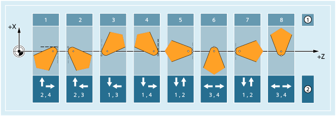
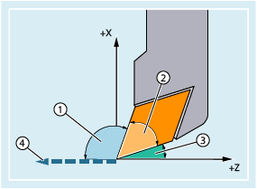

Innerhalb der Werkzeuggruppe "Drehwerkzeuge" gibt es folgende Werkzeugtypen:
500 | Schruppstahl |
505 | Y-Schruppstahl |
510 | Schlichtstahl |
515 | Y-Schlichtstahl |
520 | Einstechstahl |
521 | Einstechstahl schräg |
525 | Y-Einstechstahl |
530 | Abstechstahl |
531 | Abstechstahl schräg |
535 | Y-Abstechstahl |
540 | Gewindestahl |
541 | Gewindestahl schräg |
550 | Pilzstahl / Formstahl (WZV) |
560 | Drehbohrer (ECOCUT) |
580 | Messtaster mit Parameter Schneidenlage |
Die folgenden Abbildungen und Beschreibungen geben einen Überblick, welche Werkzeugparameter bei Drehwerkzeugen in den Korrekturspeicher eingetragen werden.
① | Schneidenlage (1 - 9) bei Bearbeitung hinter der Drehmitte |
P | Werkzeugspitze |
S | Schneidenmittelpunkt |
R | Schneidenradius |
T | Werkzeugträgerbezugspunkt |
T' | Werkzeughalterbezugspunkt |
L1 | Geometrie - Länge 1 |
L2 | Geometrie - Länge 2 |
L1' | Basismaß - Länge 1 |
L2' | Basismaß - Länge 2 |
L3' | Basismaß - Länge 3 |
Werkzeugparameter | Bedeutung |
|---|---|
$TC_DP1 | Werkzeugtyp |
$TC_DP2 | Schneidenlage Drehwerkzeuge sind durch ihre Haupt- und Nebenschneiden begrenzt. Die Schneidenlage beschreibt die Lage von Haupt- und Nebenschneide relativ zu den Koordinatenachsen, also die Lage der Werkzeugspitze P in Bezug auf den Schneidenmittelpunkt S. Bei Schneidenlage 1 - 4 liegen Haupt- und Nebenschneide im gleichen Quadranten. Bei Schneidenlage 5 - 8 liegen Haupt- und Nebenschneide in benachbarten Quadranten bzw. es liegt eine Koordinatenachse zwischen beiden Schneiden. Die Schneidenlage wird zusammen mit dem Schneidenradius ($TC_DP6) zur Berechnung der Werkzeugradiuskorrektur bei Drehwerkzeugen benötigt. |
$TC_DP3 | Geometrie - Länge 1 |
$TC_DP4 | Geometrie - Länge 2 |
$TC_DP6 | Geometrie - Radius (Schneidenradius) |
$TC_DP21 | Basismaß - Länge 1 |
$TC_DP22 | Basismaß - Länge 2 |
$TC_DP23 | Basismaß - Länge 3 |
| |
| Hinweis |
Die Schnittrichtung ist nur bei Schneidenlagen 1 - 8 von Bedeutung. |
Jeder Schneidenlage können zwei verschiedene Schnittrichtungen zugeordnet werden:
① | Schneidenlage (1 - 8) | |
② | Der jeweiligen Schneidenlage zugeordnete Schnittrichtungen: | |
1 | Ordinate - | |
2 | Ordinate + | |
3 | Abszisse - | |
4 | Abszisse + | |
Die Schnittrichtung wird im Werkzeug-Parameter $TC_DP11 abgelegt.
| Hinweis |
Die Werkzeugwinkel sind nur bei Schneidenlagen 1 - 8 von Bedeutung. |
In der folgenden Abbildung sind für ein Drehwerkzeug mit Schneidenlage 3 Halterwinkel und Freiwinkel dargestellt. Die Arbeitsebene ist G18 (Z/X). Die Schnittrichtung ist 3 (negative Z- bzw. Abszissenrichtung).
① | Halterwinkel |
② | Keil- oder Plattenwinkel = 180° - Halterwinkel - Freiwinkel |
③ | Freiwinkel |
④ | Schnittrichtung |
Die Schnittrichtung gibt die Bezugsrichtung für den Halterwinkel an. Der Freiwinkel ist der zwischen der inversen Schnittrichtung und der benachbarten Schneide (positiv) gemessene Winkel.
Halterwinkel und Freiwinkel werden in den Werkzeug-Parametern $TC_DP10 bzw. $TC_DP24 abgelegt.
Siehe auch:
Übersicht
Werkzeuggrundorientierung ($TC_DPV[...], $TC_DPV3 - 5[...] und $TC_DPVN3 - 5[...])